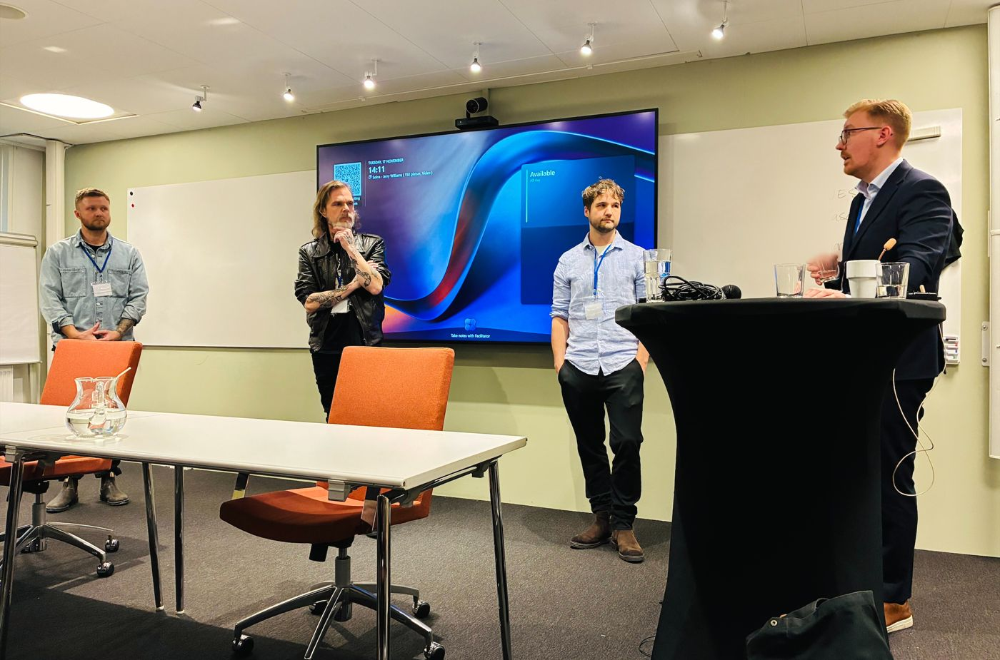
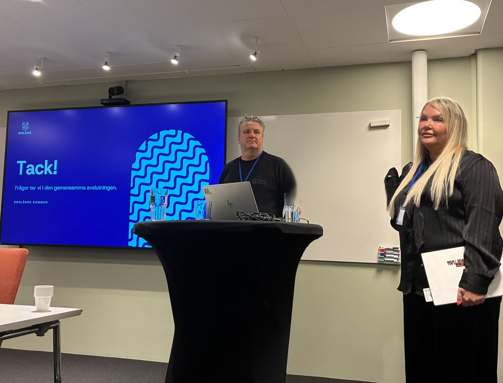
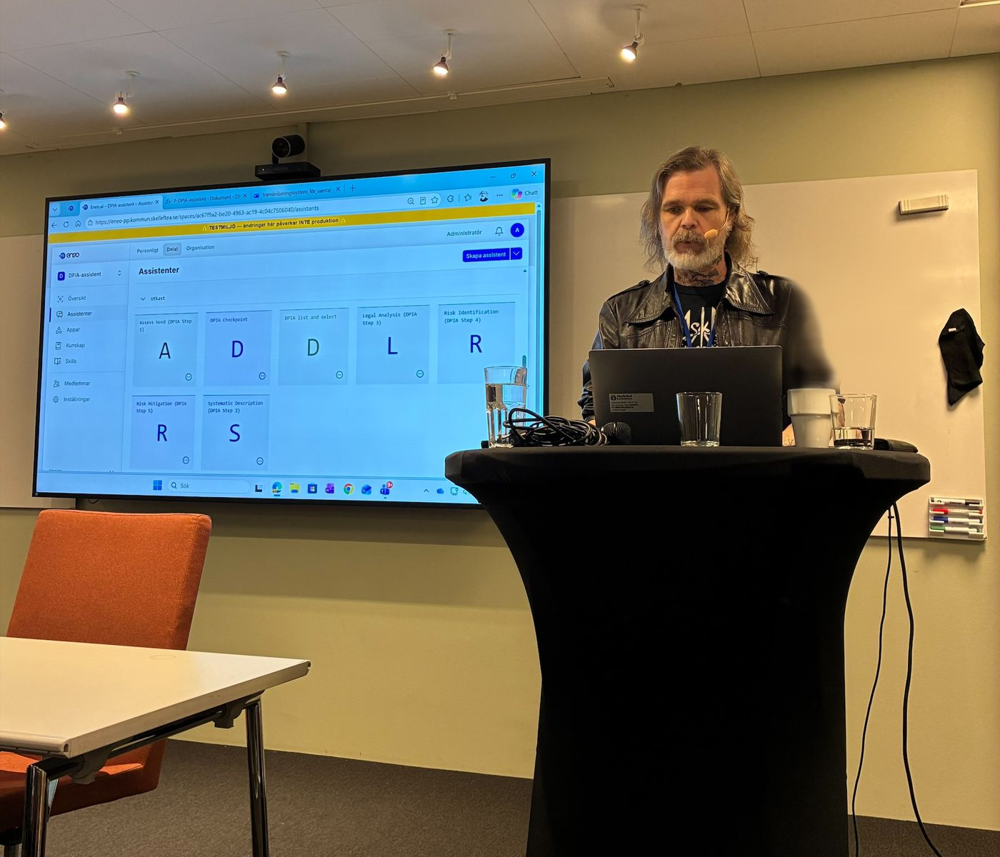
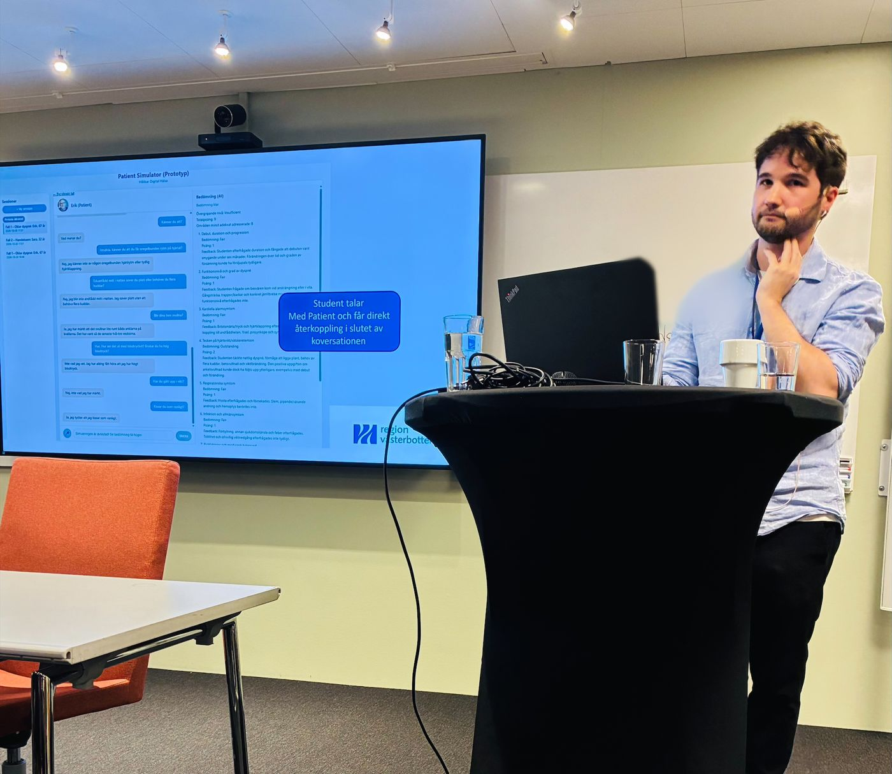

”Det var otroligt roligt att det kom så många deltagare och från så många olika kommuner och organisationer.”
Jonas Angvén planerade och organiserade dagen tillsammans med Kia Lagerqvist, enhetschef på utvecklingsenheten i Örebro kommun, Anna Bengtsson, digitaliseringsledare i Herrljunga kommun, och Jari Koponen, strateg på Digitalisering och IT i Sundsvalls kommun. Programmet byggde på önskemål från deltagarna själva, bland annat från de tidiga intresseanmälningarna.
”Träffen gav möjlighet till erfarenhetsutbyte och ny kunskap och insikter.”
Ett intresse som säger något
Att så många tog sig till Solna en tisdag i november har en förklaring. AI är inte en fråga för it-avdelningen ensam. Ett införande berör juridik, informationssäkerhet, verksamhetsutveckling och ledning på samma gång, och få organisationer har alla svaren själva. Då blir det värdefullt att höra hur grannen har gjort.
”Det är redan runt 40 offentliga organisationer som använder Eneo och det blir fler för varje månad som väljer plattformen, som utvecklas kontinuerligt genom delaktighet från olika offentliga aktörer.”
Efter en gemensam inledning med en introduktion till Eneo delade dagen sig i två spår: ett huvudspår om införande, juridik och tillämpningar, och ett spår för utvecklare.
Från pilot till vardag
Huvudspåret började med två berättelser om hur Eneo har blivit en del av verksamheten.
Herrljunga kommun visade hur man kan gå från AI-piloter till ett mer strukturerat och verksamhetsnära arbetssätt, där medarbetarnas engagemang kombineras med tydligt ansvar, kvalitetssäkring och långsiktig förvaltning. Anna Bengtsson beskrev hur kommunen har arbetat med AI-ambassadörer och bred förankring i organisationen. Det bästa kvittot på att arbetet har fungerat är en fråga som numera dyker upp när nya utvecklingsbehov diskuteras: ”Går detta att göra i Eneo?”
Kjell Perman från Borlänge kommun talade om att tänka stort men börja litet, och om vikten av att arbeta tvärfunktionellt med olika kompetenser för att lyckas. Borlänge kör Eneo i egen drift och har byggt upp stor kapacitet för lokal lagring. På så sätt kan kommunen hantera även skyddsvärd information och ändå möta kraven på säker datahantering.

Assistenter som gör verkligt arbete
Därefter följde en rad exempel på vad som faktiskt byggs i Eneo i dag.
Andreas Hedlund från Skellefteå kommun visade en mer avancerad assistent, uppbyggd av flera ”underassistenter” som var och en är expert på sin del. Tillsammans hjälper de till att identifiera behovet av, ta fram och dokumentera en DPIA, den konsekvensbedömning som dataskyddsförordningen kräver när ny teknik som AI ska införas.
Mathias Anderson från Helsingborgs stad visade en vägledningsassistent om vuxenutbildning och en intern assistent med en ovanlig uppgift: att kvalitetsgranska andra assistenter. Det kan bli värdefullt, eftersom antalet assistenter i en organisation snabbt kan växa.


Staffan Westerlund från Sundsvalls kommun berättade om ett dialoghjälpmedel, ett scenarioverktyg, som hjälper ungdomar att prata om svåra frågor och deras konsekvenser. Det kan handla om gängkriminalitet eller alkohol, och ett tjugotal liknande scenarier finns framtagna inom andra områden. Sundsvall visade också tal till text, där ett inspelat samtal blev ett färdigskrivet mötesprotokoll.
Nicklas Jonsson från Region Västerbotten delade med sig av regionens arbete med att visualisera data, så att tjänster kan byggas utifrån rätt källa. I en organisation med enorma mängder data som ofta ligger i olika stuprör är det en förutsättning, och målet är att medarbetarna ska kunna ”prata med data” direkt. Han visade också en prototyp där läkarstudenter övar patientsamtal mot en simulerad patient och får återkoppling på sin insats.
Utvecklarna hade ett eget spår
Ett trettiotal deltagare valde spåret för utvecklare, som leddes av AI-utvecklarna Cagri Cimen och Max Eriksson från Sundsvalls kommun. Här diskuterades hur AI förändrar utvecklarrollen, som blir alltmer verksamhetsnära och kommer in tidigare i förändringsarbetet.
Modulen för flöden demonstrerades, tillämpad på tal till text, och deltagarna fick sedan pröva att utveckla för Eneo i praktiken på sin egen dator.
Teknikspårets presentation finns att ladda ned: Hur Eneo utvecklas med hjälp av AI (PDF, 0,3 MB).
Juridiken: får ett promptpaket lämna kommunen?
Dagens kanske mest efterlängtade pass handlade om säkerhet, sekretess och driftsformer. Det är ett område där många har frågor, särskilt om skyddsvärda uppgifter. De största nyttorna med AI finns ofta just i verksamheter där sekretess gäller, men alla kommuner kan inte bygga egen kapacitet för att köra språkmodeller.
Sundsvalls och Ånge kommuner presenterade tillsammans med Hellström Advokatbyrå en utredning av frågan. Den visar att det finns ett lagrum att stödja sig på när ett avgränsat ”promptpaket” lämnar kommunen och passerar en sekretessgräns: bestämmelsen i 10 kap. 2 a § offentlighets- och sekretesslagen om att lämna ut uppgifter för enbart teknisk bearbetning eller teknisk lagring, så länge det inte är olämpligt.
Det är inget frikort. Som alltid krävs ett förarbete med riskbedömning och klassning av information, och organisationen behöver ha kontroll över hanteringen i alla led, hos leverantörer och hos deras underleverantörer.
Detektivarbetet bakom svensk tal till text
Faton Rekathati, data scientist vid KBLab på Kungliga biblioteket, berättade om arbetet bakom språkmodellen KB-Whisper. Det är ett imponerande och närmast detektivmässigt arbete som har gjort modellen mycket bra på svenska språket och på svenska sammanhang.
Träningsdatat har satts samman av mycket stora mängder digitaliserat material. Dit hör tv-sändningar från SVT, som har parats ihop med sina undertexter, och sändningar från regeringssammanträden, som har kopplats till protokollen. I dag är KB-Whisper stommen i många av de tal-till-text-tjänster som används i offentlig sektor, bland dem den i Eneo.
Deltagarna pekade ut vägen framåt
Under hela dagen kunde deltagarna skicka in önskemål om Eneos framtid, och i det sista passet visades resultatet i realtid. Det blev 86 önskemål, som sorterades i fem områden:
- Klassa och maska känslig information – stöd för att tryggt kunna arbeta med känsligt material.
- Dela assistenter mellan kommuner – en katalog eller marknadsplats där organisationer kan återanvända varandras assistenter.
- Styrning, behörigheter och regelkrav – bättre överblick och kontroll för den som administrerar Eneo.
- Eneo som tjänst och gemensam drift – så att även organisationer utan egna utvecklare eller egen infrastruktur kan använda plattformen.
- Agenter och orkestrering – assistenter som samverkar och utför uppgifter i flera steg.
Alla önskemål bearbetas nu och tas med i det fortsatta arbetet med plattformen. Utvärderingen visar att många deltagare var mycket nöjda med dagen, vilket gläder arrangörerna. Och kanske är det just det som är poängen med en användarträff för en plattform som det offentliga äger tillsammans: de som satt i publiken är samma personer som formar vad Eneo blir.
Presentationer från dagen
Här finns de presentationer som talarna har delat med sig av. Filerna laddas ned i sitt ursprungliga format.
- Introduktion till Eneo (PowerPoint, 0,7 MB)
- Från pilot till produktion – Herrljunga kommun (PowerPoint, 0,1 MB)
- Från pilot till produktion – Borlänge kommun (PDF, 0,7 MB)
- Region Västerbottens presentation (PDF, 2,7 MB)
- Sekretess och AI-inferens hos extern part – Sundsvalls kommun (PowerPoint, 0,4 MB)
- Teknikspåret: Hur Eneo utvecklas med hjälp av AI (PDF, 0,3 MB)